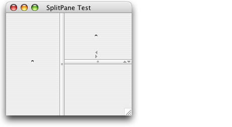

JSplitPane
Client properties:
Property |
Type | Notes |
|---|---|---|
Quaqua.SplitPane |
java.lang.String |
Values: "thumb", "bar" |
Quaqua.Component.visualMargin |
java.awt.Insets |
See layout |
Client property: Quaqua.SplitPane.style
Quaqua's SplitPaneUI supports two different styles:
- thumb
- bar
The thumb style is very lean. Only a round knob at the center of the divider and (if switched on) the one touch expansion buttons are drawn.
With the bar style, the divider is a bar that goes across the split pane. The thumb style is the default.

You can specify a style using the Quaqua.SplitPane.style client
property and passing in the String "thumb" or "bar".
|
Popular Mac OS X applications such as iTunes and Mail often use a 1 pixel wide divider. You can achieve this by using the "bar" style and by setting the divider width to 1.
The screenshot below shows a horizontal and a vertical split pane. Both use the "bar" style. The horizontal split pane has its divider width set to 1. Also, all scroll panes have an empty border, in order to have them go from edge to edge of the window and the split bars.

Here is the code snippet that was used to configure the horizontal split pane:
|